Dose-Response Assay Compilation
Last updated: 2021-03-06
Checks: 6 1
Knit directory: toxin_dose_responses/
This reproducible R Markdown analysis was created with workflowr (version 1.6.2). The Checks tab describes the reproducibility checks that were applied when the results were created. The Past versions tab lists the development history.
Great! Since the R Markdown file has been committed to the Git repository, you know the exact version of the code that produced these results.
Great job! The global environment was empty. Objects defined in the global environment can affect the analysis in your R Markdown file in unknown ways. For reproduciblity it’s best to always run the code in an empty environment.
The command set.seed(20210305) was run prior to running the code in the R Markdown file. Setting a seed ensures that any results that rely on randomness, e.g. subsampling or permutations, are reproducible.
Great job! Recording the operating system, R version, and package versions is critical for reproducibility.
Nice! There were no cached chunks for this analysis, so you can be confident that you successfully produced the results during this run.
Using absolute paths to the files within your workflowr project makes it difficult for you and others to run your code on a different machine. Change the absolute path(s) below to the suggested relative path(s) to make your code more reproducible.
| absolute | relative |
|---|---|
| ~/Documents/projects/toxin_dose_responses/ | . |
Great! You are using Git for version control. Tracking code development and connecting the code version to the results is critical for reproducibility.
The results in this page were generated with repository version 46c9647. See the Past versions tab to see a history of the changes made to the R Markdown and HTML files.
Note that you need to be careful to ensure that all relevant files for the analysis have been committed to Git prior to generating the results (you can use wflow_publish or wflow_git_commit). workflowr only checks the R Markdown file, but you know if there are other scripts or data files that it depends on. Below is the status of the Git repository when the results were generated:
Ignored files:
Ignored: analysis/.DS_Store
Untracked files:
Untracked: data/drugclasses.csv
Untracked: output/Aldicarb_EC10.csv
Untracked: output/Aldicarb_EC50.csv
Untracked: output/Aldicarb_EC90.csv
Untracked: output/Arsenic trioxide_EC10.csv
Untracked: output/Atrazine_EC10.csv
Untracked: output/Atrazine_EC50.csv
Untracked: output/Cadmium dichloride_EC10.csv
Untracked: output/Cadmium dichloride_EC50.csv
Untracked: output/Cadmium dichloride_EC90.csv
Untracked: output/Carbaryl_EC10.csv
Untracked: output/Carbaryl_EC50.csv
Untracked: output/Carbaryl_EC90.csv
Untracked: output/Carboxin_EC10.csv
Untracked: output/Carboxin_EC50.csv
Untracked: output/Carboxin_EC90.csv
Untracked: output/Chlorfenapyr_EC10.csv
Untracked: output/Chlorfenapyr_EC50.csv
Untracked: output/Chlorfenapyr_EC90.csv
Untracked: output/Chlorpyrifos_EC10.csv
Untracked: output/Chlorpyrifos_EC50.csv
Untracked: output/Chlorpyrifos_EC90.csv
Untracked: output/Copper(II) chloride_EC10.csv
Untracked: output/Copper(II) chloride_EC50.csv
Untracked: output/Copper(II) chloride_EC90.csv
Untracked: output/H2.plot.20210306.png
Untracked: output/Lead(II) nitrate_EC10.csv
Untracked: output/Methomyl_EC10.csv
Untracked: output/Methomyl_EC50.csv
Untracked: output/Methomyl_EC90.csv
Untracked: output/Methylmercury dichloride_EC10.csv
Untracked: output/Methylmercury dichloride_EC50.csv
Untracked: output/Methylmercury dichloride_EC90.csv
Untracked: output/Nickel dichloride_EC10.csv
Untracked: output/Nickel dichloride_EC50.csv
Untracked: output/Nickel dichloride_EC90.csv
Untracked: output/Paraquat_EC10.csv
Untracked: output/Paraquat_EC50.csv
Untracked: output/Paraquat_EC90.csv
Untracked: output/Pyraclostrobin_EC10.csv
Untracked: output/Pyraclostrobin_EC50.csv
Untracked: output/Pyraclostrobin_EC90.csv
Untracked: output/Silver nitrate_EC10.csv
Untracked: output/Silver nitrate_EC50.csv
Untracked: output/Triphenyl phosphate_EC10.csv
Untracked: output/Triphenyl phosphate_EC50.csv
Untracked: output/Triphenyl phosphate_EC90.csv
Untracked: output/Zinc dichloride_EC10.csv
Untracked: output/Zinc dichloride_EC50.csv
Untracked: output/Zinc dichloride_EC90.csv
Untracked: output/cv.control.wells.csv
Unstaged changes:
Modified: analysis/doseresponsemodels.Rmd
Note that any generated files, e.g. HTML, png, CSS, etc., are not included in this status report because it is ok for generated content to have uncommitted changes.
These are the previous versions of the repository in which changes were made to the R Markdown (analysis/toxin8strains.Rmd) and HTML (docs/toxin8strains.html) files. If you’ve configured a remote Git repository (see ?wflow_git_remote), click on the hyperlinks in the table below to view the files as they were in that past version.
| File | Version | Author | Date | Message |
|---|---|---|---|---|
| Rmd | 46c9647 | sam-widmayer | 2021-03-06 | static working directory |
| Rmd | 41bdaa0 | sam-widmayer | 2021-03-05 | dynamic working directory |
| Rmd | 0c9d312 | sam-widmayer | 2021-03-05 | initiate toxin DRC analysis repo |
Purpose:
- Compile past assay results.
- Provide dose-response curves for each toxin.
Analysis Date: March 06, 2021
Assay Summary


Metadata_Experiment bleach median cv.censor
1 toxin09A 1 0.4002814 0
2 toxin10A 1 0.4197976 0
3 toxin11A 1 0.4367000 0
4 toxin14A 1 0.3306423 0
5 toxin14A 2 0.6350979 1
6 toxin14A 3 0.3307924 0
7 toxin14B 1 0.3537066 0
8 toxin14B 2 0.6953160 1
9 toxin14B 3 0.4131710 0
10 toxin15A 1 0.3776043 0
11 toxin15A 2 0.3253871 0
12 toxin15A 3 0.5951538 1
13 toxin15B 1 0.3060126 0
14 toxin15B 2 0.3803403 0
15 toxin15B 3 0.6178760 1
16 toxin16A 1 0.3058102 0
17 toxin16A 2 0.6505324 1
18 toxin16A 3 0.6474844 1
19 toxin17A 1 0.3215600 0
20 toxin17A 2 0.5741834 1
21 toxin17A 3 0.3411714 0
22 toxin18A 1 0.3136715 0
23 toxin18A 2 0.3292525 0
24 toxin18A 3 0.3363887 0
25 toxin19A 1 0.3300594 0
26 toxin19A 2 0.3203313 0
27 toxin19A 3 0.3406528 0 Df Sum Sq Mean Sq F value Pr(>F)
assay 10 1.0900 0.1090 8.912 7.86e-12 ***
as.factor(bleach) 2 0.8644 0.4322 35.341 1.16e-13 ***
strain 7 0.1209 0.0173 1.412 0.203
assay:as.factor(bleach) 14 1.7381 0.1241 10.151 < 2e-16 ***
Residuals 179 2.1892 0.0122
---
Signif. codes: 0 '***' 0.001 '**' 0.01 '*' 0.05 '.' 0.1 ' ' 1Silver
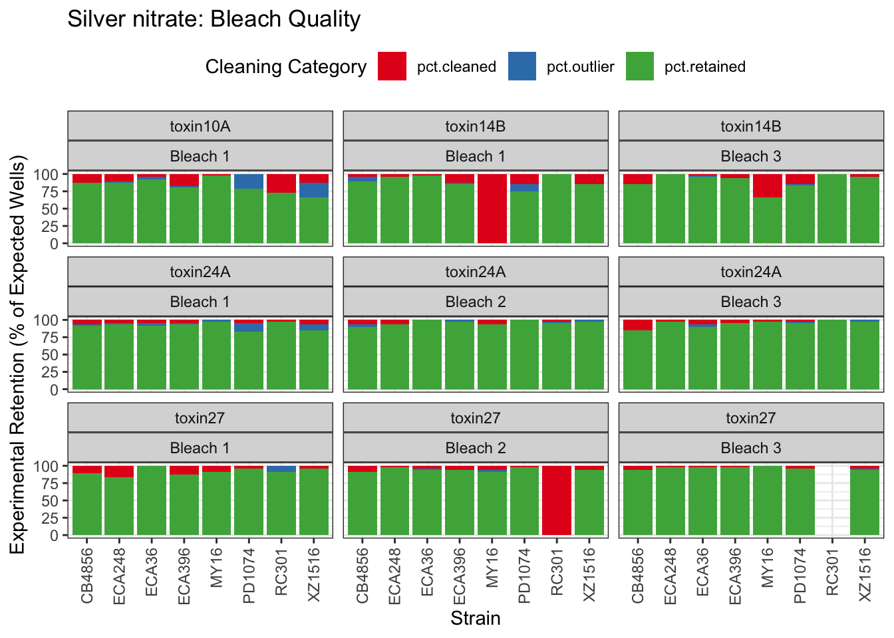

Cadmium
[1] "Excluding toxin09A: Inconsistent Response"
 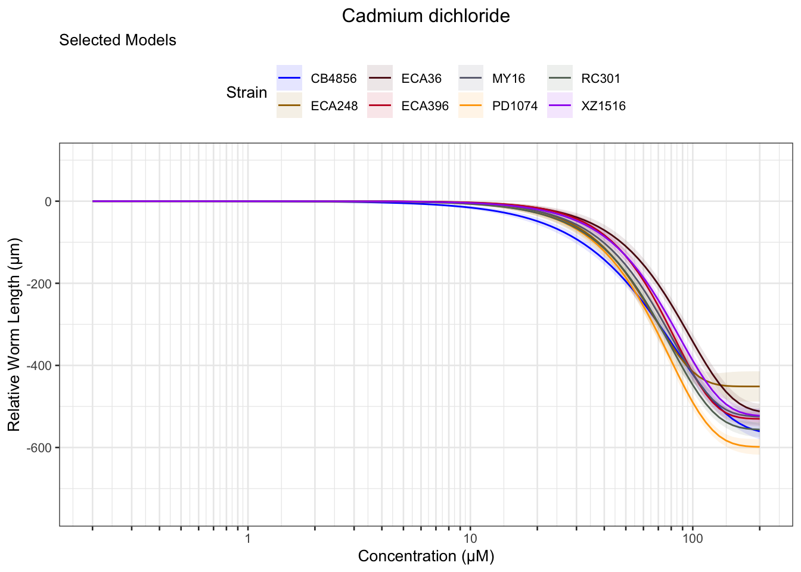
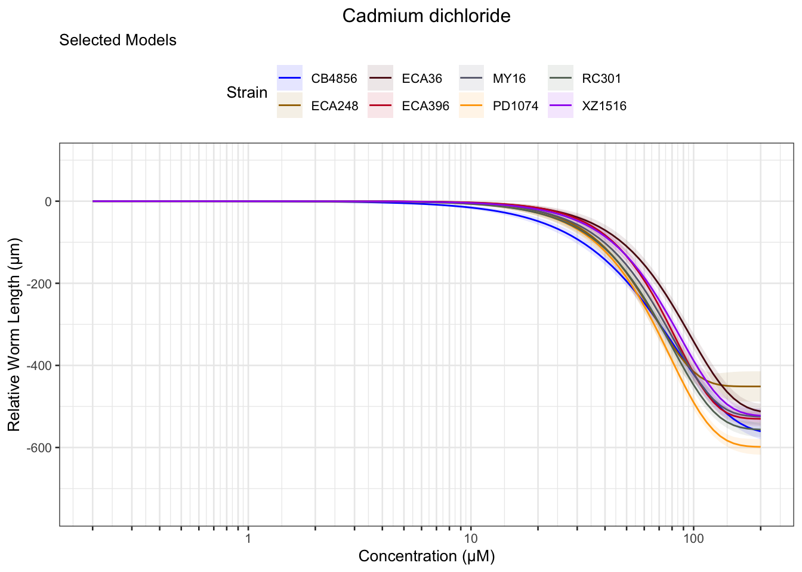
Copper
 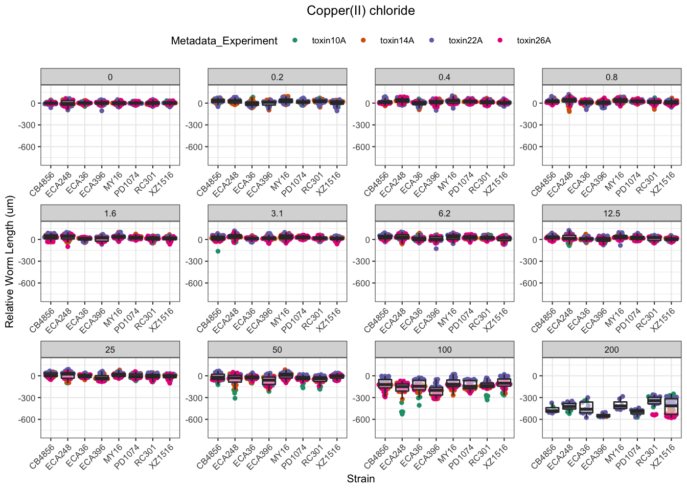
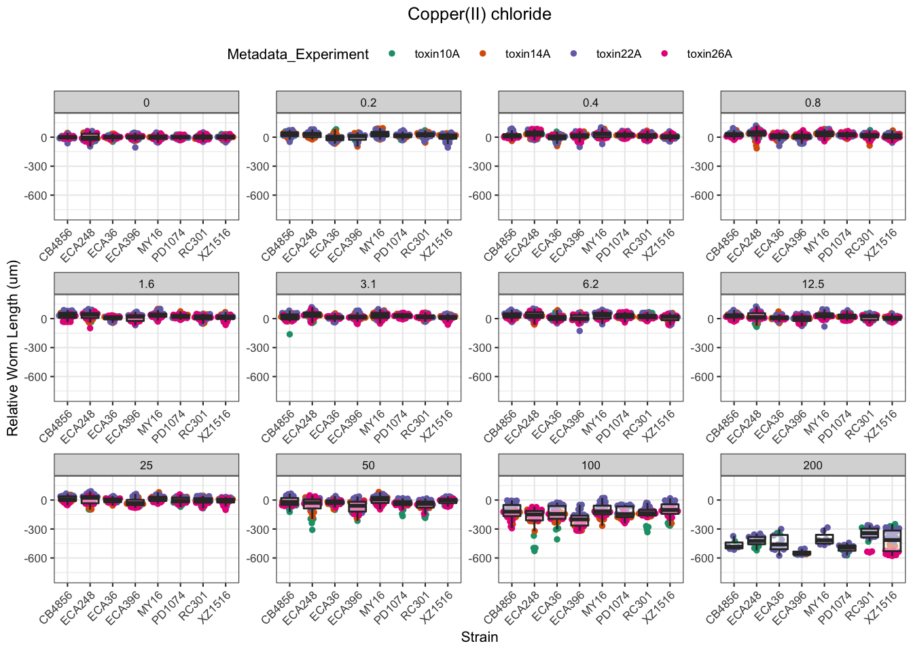
Nickel


Paraquat

 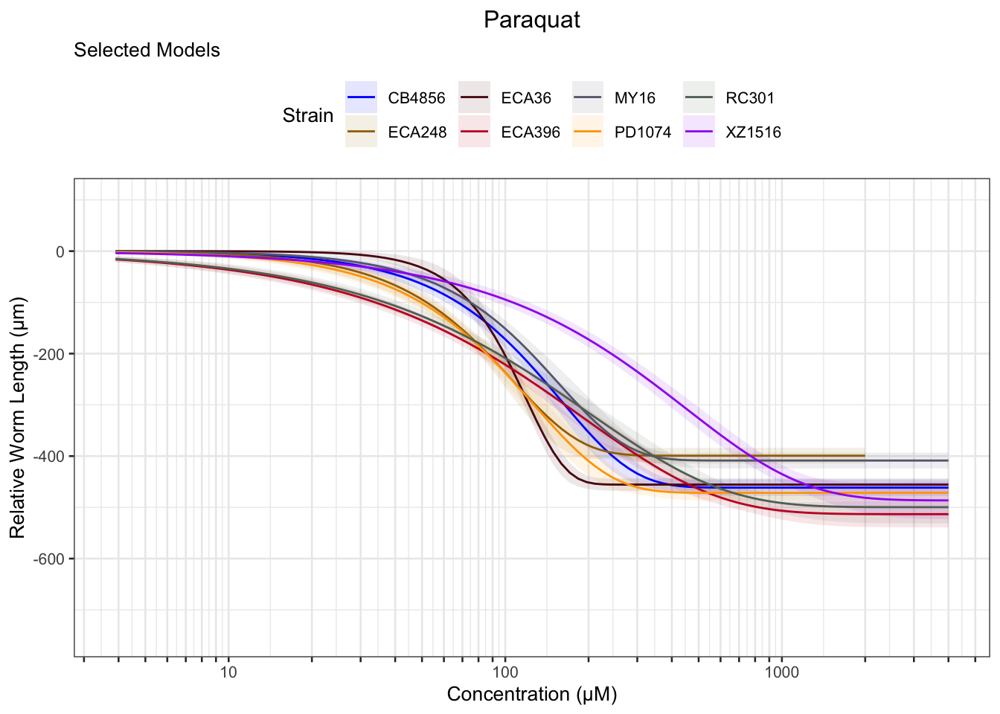
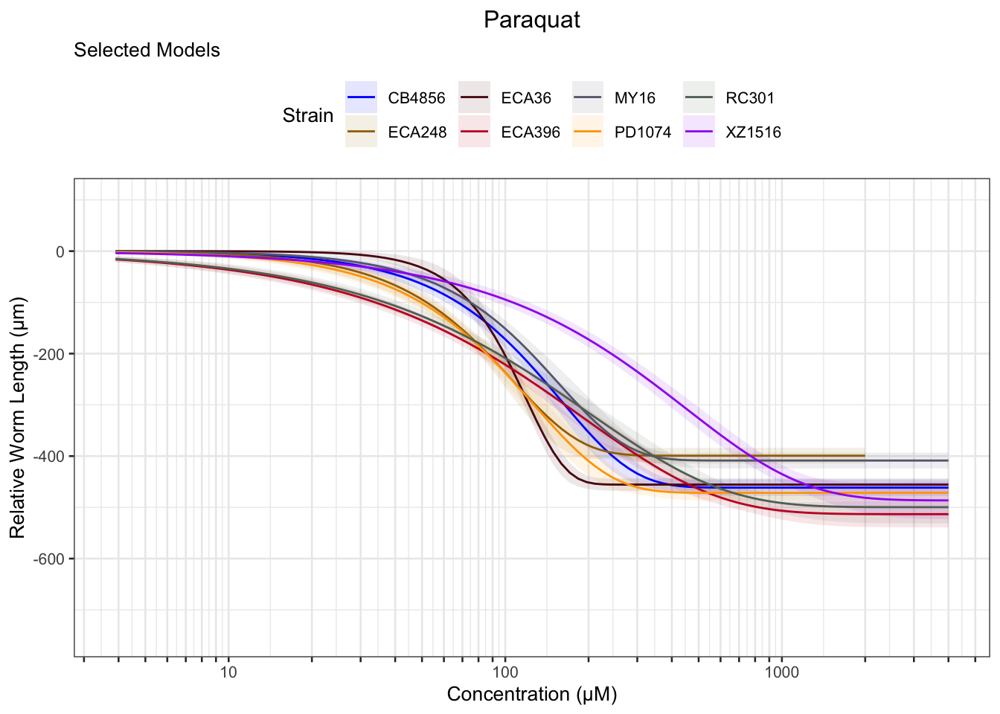
Zinc


Pyraclostrobin
[1] "Excluding toxin11A: Inconsistent Response"


Aldicarb
 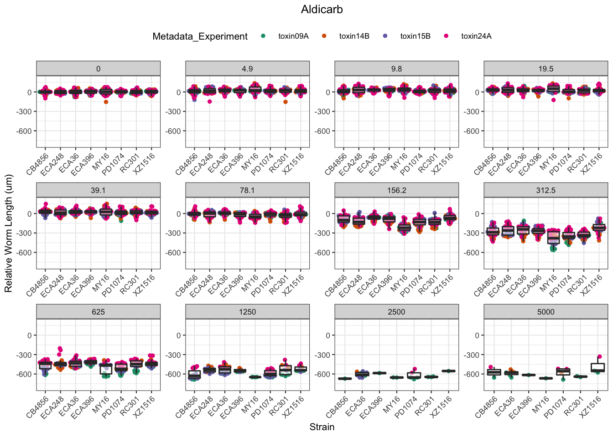
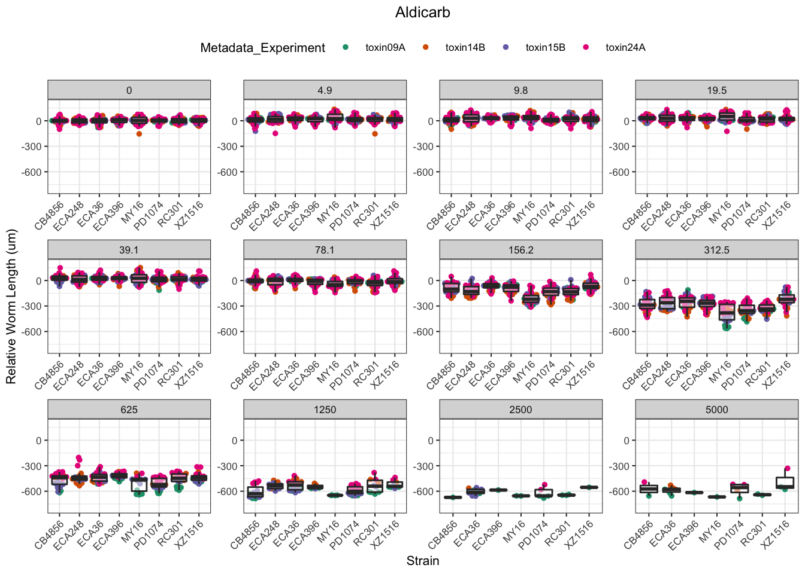
Chlorfenapyr
[1] "Excluding toxin09A, toxin10A, toxin11A, toxin12A: No Response/Variable Dilution"


Methomyl
 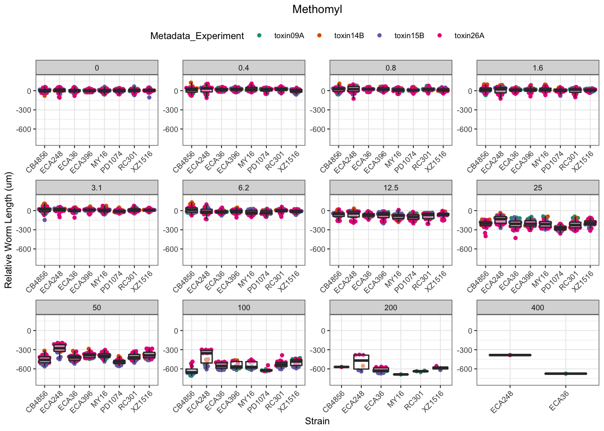
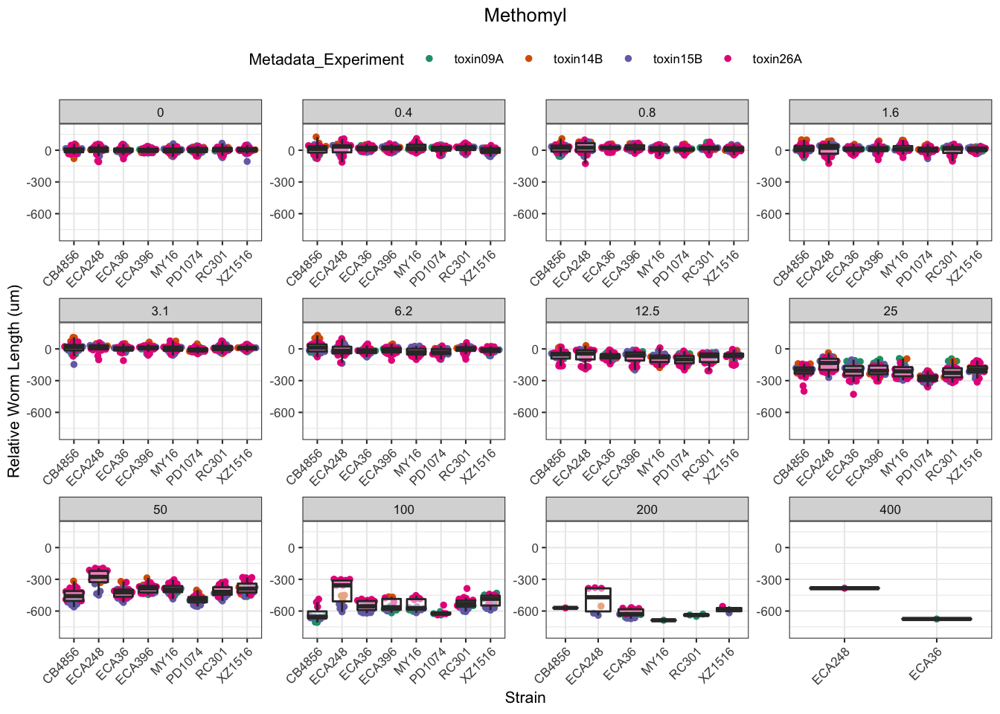
Methyl Mercury


Triphenyl phosphate


Arsenic trioxide


Carbaryl

Carboxin


Chlorpyrifos
[1] "Excluding toxin17A: No Response"


Lead (II) nitrate
%20nitrate-1.png)
%20nitrate-2.png)
%20nitrate-3.png)
Atrazine
[1] "Excluding toxin16A: Inaccurate Dilution Series"


EC Estimates


EC10

EC50

EC90

Summary Tables
Table: Aldicarb Estimates
Strain Weibull Log-Logistic Lognormal
------- ------------- ------------- -------------
ECA396 115.93±10.69 124±10.14 122.69±9.62
CB4856 117.03±10.86 127.8±10.62 127.06±9.99
ECA36 141.24±10.94 153.7±10.22 154.55±10.2
MY16 70.88±6.75 75.61±5.63 75.51±5.4
XZ1516 88.26±11.96 103.23±12.61 106.18±12.35
RC301 81.58±6.96 92.4±6.46 92.52±6.19
PD1074 84.01±5.4 97.64±4.96 98.86±4.84
ECA248 93.07±10.98 107.73±10.06 109.63±9.68
Table: Aldicarb Estimates
Strain Weibull Log-Logistic Lognormal
------- ------------- ------------- -------------
ECA396 353.62±18.18 348.91±19.81 349.02±20.1
CB4856 365.8±16.01 359.93±17.68 354.85±17.53
ECA36 402.54±15.34 393.69±16.57 393.51±16.42
MY16 207.83±9.88 204.35±10.2 205.21±10.2
XZ1516 357.4±21 353.31±23.63 345.71±22.67
RC301 270.2±12.53 263.54±11.81 263.67±11.86
PD1074 271.33±8.87 263.94±7.88 263.8±7.91
ECA248 341.91±22.28 330.47±22.2 332.64±21.88
Table: Aldicarb Estimates
Strain Weibull Log-Logistic Lognormal
------- ------------- --------------- ---------------
ECA396 719.79±61.92 981.75±123.98 992.89±124.08
CB4856 756.27±56.41 1013.64±113.62 990.99±106.18
ECA36 784.67±52.68 1008.44±100.63 1001.92±97.57
MY16 412.5±36.73 552.32±62.14 557.72±61.07
XZ1516 871.45±90.87 1209.28±200.61 1125.56±172.51
RC301 579.61±50.43 751.61±77.97 751.39±75.86
PD1074 572.76±37.1 713.43±52.09 703.89±49.71
ECA248 783.49±96.35 1013.78±158.22 1009.31±148.09
Table: Arsenic trioxide Estimates
Strain Weibull Log-Logistic Lognormal
------- -------- ------------- --------------
MY16 NA NA 160.67±145.55
Table: Atrazine Estimates
Strain Weibull Log-Logistic Lognormal
------- -------------- -------------- --------------
PD1074 466.22±485.95 662.6±714.11 NA
XZ1516 207.41±30.05 247.85±44.5 300.35±107.71
RC301 157.38±13.76 193.76±23.71 236.31±66.08
CB4856 133.06±17.69 164.9±28 200.37±69.55
ECA36 197.93±43.98 263.15±77.94 416.45±311.45
ECA396 413.79±447.78 679.03±670.12 NA
Table: Atrazine Estimates
Strain Weibull Log-Logistic Lognormal
------- -------------- -------------- ----------
XZ1516 676.67±158.64 882.92±285.38 NA
RC301 544.44±81.1 751.76±184.58 NA
CB4856 552.98±129.78 749.71±255.87 NA
ECA36 779.58±263.89 NA NA
Table: Cadmium dichloride Estimates
Strain Weibull Log-Logistic Lognormal
------- ----------- ------------- -----------
MY16 19.92±2.34 20.57±1.96 20.67±1.83
XZ1516 10.33±2.5 12.47±2.92 14.33±4.63
PD1074 16.39±1.75 19.05±1.16 19.3±1.08
ECA36 20.97±1.64 24.52±1.81 25.01±1.72
ECA396 15.99±1.93 18.92±2.04 19.52±2
RC301 10.69±1.64 12.36±1.67 12.83±1.69
ECA248 16.81±1.52 18.47±1.35 19.26±1.33
CB4856 11.05±1.2 12.87±1.17 13.27±1.14
Table: Cadmium dichloride Estimates
Strain Weibull Log-Logistic Lognormal
------- ----------- ------------- -----------
MY16 41.49±1.76 40.93±2.13 40.46±2.1
XZ1516 46.85±6.1 55.93±16.88 50.2±16.01
PD1074 44.15±2.21 44.39±1.66 44.22±1.67
ECA36 55.03±2.36 54.13±2.52 53.57±2.39
ECA396 54.09±3.89 54.06±5.31 53.56±5.21
RC301 43.69±3.6 45.78±5.62 44.27±5.49
ECA248 37.6±1.21 37.2±1.4 36.83±1.33
CB4856 35.98±1.7 36.37±2.06 35.61±1.96
Table: Cadmium dichloride Estimates
Strain Weibull Log-Logistic Lognormal
------- ------------- ------------- --------------
MY16 66.21±4.67 81.46±9.25 79.22±8.77
XZ1516 122.8±32.08 NA 175.85±157.81
PD1074 83.04±10.75 103.44±9.94 101.36±9.18
ECA36 101.77±7.44 119.52±14.24 114.74±12.02
ECA396 117.63±14.09 154.43±35.58 146.92±32.59
RC301 107.18±14.34 169.53±46.87 152.77±42.7
ECA248 62.81±3.46 74.92±7.04 70.43±6.13
CB4856 76.33±6.98 102.75±14.5 95.62±12.4
Table: Carbaryl Estimates
Strain Weibull Log-Logistic Lognormal
------- -------------- -------------- --------------
RC301 134.99±12.32 184.75±27.65 266.56±104.72
MY16 102.4±4.79 118.9±4.6 122.84±4.38
XZ1516 120.84±5.65 141.47±5.76 147.81±6.37
PD1074 405.97±331.53 712.34±810.51 NA
ECA248 187.18±12.14 232.29±23.89 293.36±79.54
CB4856 189.26±8.34 214.14±8.73 222.86±11.36
ECA396 109.72±6.31 133.78±8.44 144.31±12.7
ECA36 189.16±12.29 238.08±26 328.1±114.97
Table: Carbaryl Estimates
Strain Weibull Log-Logistic Lognormal
------- -------------- -------------- -------------
RC301 597.55±103.03 974.93±273.99 NA
MY16 323.94±10.35 359.89±19.57 358.81±22.63
XZ1516 395.35±19.16 474.18±41.95 500.52±62.33
ECA248 585.44±71.01 823.18±173.6 NA
CB4856 484.83±22.64 573.89±50.32 629.52±90.57
ECA396 418.18±37.57 542.91±85.82 613.2±151.12
ECA36 595.57±74.55 860.54±189.68 NA
Table: Carbaryl Estimates
Strain Weibull Log-Logistic Lognormal
------- -------------- ------------- ----------
MY16 674.84±39.18 NA NA
XZ1516 841.45±68.19 NA NA
CB4856 882.94±67.35 NA NA
ECA396 981.02±136.95 NA NA
Table: Carboxin Estimates
Strain Weibull Log-Logistic Lognormal
------- ------------- ------------- -------------
RC301 212.04±13.65 234.24±13.71 237.57±13.49
MY16 202.22±12.29 221.97±12.01 225.33±11.77
XZ1516 230.65±16.41 262.22±15.83 265.72±15.34
PD1074 265.57±24.78 299.98±23.62 308.24±24.92
ECA248 242.35±20.27 269.74±19.09 273.34±18.4
CB4856 186.33±14.42 208.58±14.07 212.31±13.49
ECA396 254.57±12.38 277.82±12.06 281.22±11.85
ECA36 333.38±25.47 366.64±25.28 369.6±24.67
Table: Carboxin Estimates
Strain Weibull Log-Logistic Lognormal
------- ------------- -------------- ---------------
RC301 483.34±14.87 486.29±18.06 479.67±17.59
MY16 507.04±15.07 521.11±20.94 512.18±20.92
XZ1516 613.62±25.4 642.59±36.46 642±40.32
PD1074 785.46±53.78 942.47±133.32 1011.57±224.12
ECA248 647.37±32.8 693.17±53.73 692.22±61.91
CB4856 526.86±22.53 552.68±34.07 542.01±34.73
ECA396 523.57±12.24 520.83±14.02 516.26±13.63
ECA36 686.68±28.61 683.94±33.76 678.16±32.9
Table: Carboxin Estimates
Strain Weibull Log-Logistic Lognormal
------- --------------- --------------- ---------------
RC301 817.13±44.34 1009.56±92.62 968.46±84.21
MY16 910.85±48.06 1223.38±118.83 1164.21±111.62
XZ1516 1144.75±91.47 1574.75±214.79 1551.13±224.94
PD1074 1567.63±186.59 NA NA
ECA248 1210.86±111.8 1781.26±309.62 1753.05±340.02
CB4856 1021.81±76.81 1464.47±207.55 1383.69±196.76
ECA396 828.99±33.93 976.38±63.78 947.77±58.3
ECA36 1088.29±77.32 1275.82±148.06 1244.31±136.71
Table: Chlorfenapyr Estimates
Strain Weibull Log-Logistic Lognormal
------- ---------- ------------- ----------
ECA248 0.18±0.01 0.2±0.01 0.2±0.01
XZ1516 0.28±0.04 0.3±0.03 0.3±0.03
ECA36 0.59±0.06 0.66±0.06 0.65±0.05
CB4856 0.33±0.05 0.32±0.04 0.31±0.03
ECA396 0.44±0.02 0.49±0.02 0.49±0.01
PD1074 0.36±0.02 0.34±0.01 0.33±0.01
RC301 0.2±0.01 0.22±0.01 0.22±0.01
MY16 0.23±0.02 0.24±0.02 0.24±0.01
Table: Chlorfenapyr Estimates
Strain Weibull Log-Logistic Lognormal
------- ---------- ------------- ----------
ECA248 0.47±0.01 0.45±0.02 0.45±0.01
XZ1516 0.57±0.02 0.57±0.02 0.57±0.02
ECA36 1.22±0.04 1.21±0.04 1.2±0.04
CB4856 0.54±0.02 0.53±0.03 0.52±0.03
ECA396 0.8±0.02 0.75±0.02 0.75±0.02
PD1074 0.58±0.01 0.58±0.01 0.58±0.01
RC301 0.44±0.01 0.42±0.01 0.42±0.01
MY16 0.51±0.02 0.5±0.02 0.49±0.02
Table: Chlorfenapyr Estimates
Strain Weibull Log-Logistic Lognormal
------- ---------- ------------- ----------
ECA248 0.87±0.05 1.05±0.08 1.01±0.07
XZ1516 0.89±0.11 1.08±0.12 1.07±0.11
ECA36 1.93±0.19 2.21±0.21 2.2±0.18
CB4856 0.74±0.05 0.88±0.09 0.88±0.1
ECA396 1.16±0.04 1.15±0.07 1.15±0.06
PD1074 0.79±0.03 1.01±0.05 1.03±0.04
RC301 0.72±0.02 0.83±0.04 0.8±0.04
MY16 0.85±0.05 1.04±0.08 1.01±0.07
Table: Chlorpyrifos Estimates
Strain Weibull Log-Logistic Lognormal
------- ------------ ------------- ----------
RC301 15.65±69.09 NA NA
XZ1516 2.55±0.16 2.96±0.21 3.21±0.41
PD1074 0.82±0.43 1.94±1.5 7.92±10.3
ECA248 2.35±1.85 4.2±3.8 NA
CB4856 4.55±8.28 7.2±7.15 NA
ECA396 1.16±1.01 2.2±2.14 7.53±13.2
ECA36 1.67±0.15 2.08±0.25 2.49±0.55
MY16 NA 10.98±21.5 NA
Table: Chlorpyrifos Estimates
Strain Weibull Log-Logistic Lognormal
------- ------------ ------------- -----------
XZ1516 6.9±0.54 8.79±1.3 10.87±3.21
PD1074 18.47±14.33 NA NA
ECA396 15.67±18.38 NA NA
ECA36 6.96±1.08 9.61±2.2 14.19±6.29
Table: Chlorpyrifos Estimates
Strain Weibull Log-Logistic Lognormal
------- ----------- ------------- ----------
XZ1516 13.01±1.53 NA NA
ECA36 17.33±3.6 NA NA
Table: Copper(II) chloride Estimates
Strain Weibull Log-Logistic Lognormal
------- ----------- ------------- ------------
ECA396 38.22±2.85 40.22±2.52 40.99±2.49
CB4856 33.35±3.14 35.63±2.77 36.01±2.66
ECA36 28.16±3.09 31.09±2.82 31.81±2.75
MY16 53.42±4.22 53.06±3.57 52.31±3.1
XZ1516 19.81±3.82 26.58±7.63 36.63±25.97
RC301 38.33±3.77 41.15±3.21 41.82±3.27
PD1074 43.85±3.58 45.28±3.1 46±2.89
ECA248 19.1±2 22.47±2.04 23.4±2.11
Table: Copper(II) chloride Estimates
Strain Weibull Log-Logistic Lognormal
------- ------------- ------------- ------------
ECA396 79.69±2.5 79.86±3.53 78.44±3.4
CB4856 79.65±3.67 82.38±6.2 81.26±6.67
ECA36 76.39±4.57 81.07±8.44 80.26±9.44
MY16 89.28±2.17 88.26±2.64 86.9±2.71
XZ1516 100.33±34.89 159.91±89.98 NA
RC301 88.99±3.44 97.88±8.19 98.69±12.04
PD1074 83.46±2.4 82.95±3 81.56±2.89
ECA248 73.63±7.11 85.96±14.67 89.53±20.86
Table: Copper(II) chloride Estimates
Strain Weibull Log-Logistic Lognormal
------- ------------- ------------- -------------
ECA396 127.28±6.16 158.58±16.06 150.12±14.98
CB4856 138.71±10.44 190.46±30.78 183.35±32.24
ECA36 144.28±14.97 NA NA
MY16 123.85±4.76 146.81±10.35 144.37±9.75
RC301 152.22±12.79 NA NA
PD1074 125.79±5.29 151.96±12.7 144.63±11.24
ECA248 173.99±27.81 NA NA
Table: Lead(II) nitrate Estimates
Strain Weibull Log-Logistic Lognormal
------- -------------- -------------- ----------
ECA36 226.93±128.54 495.47±448.34 NA
Table: Methomyl Estimates
Strain Weibull Log-Logistic Lognormal
------- ----------- ------------- -----------
ECA396 9.92±0.84 11.24±0.84 11.21±0.82
CB4856 9.99±1.09 11.16±1.07 11.22±1.05
ECA36 6.68±0.48 8.13±0.49 8.32±0.49
MY16 6.69±0.73 8.08±0.77 8.2±0.75
XZ1516 5.48±0.68 6.77±0.71 6.91±0.7
RC301 7.35±0.66 8.73±0.67 8.8±0.65
PD1074 6.38±0.63 7.42±0.65 7.57±0.63
ECA248 14.13±1.31 15.07±1.13 15.12±1.15
Table: Methomyl Estimates
Strain Weibull Log-Logistic Lognormal
------- ----------- ------------- -----------
ECA396 35.82±1.47 35.73±1.64 35.2±1.63
CB4856 31.29±1.48 30.59±1.6 30.2±1.57
ECA36 33.84±1.25 34.41±1.47 33.95±1.46
MY16 34.57±2.05 34.78±2.43 34.19±2.39
XZ1516 30.41±2.23 29.39±2.5 29.33±2.42
RC301 33.14±1.61 32.82±1.74 32.48±1.71
PD1074 28.79±1.44 28.29±1.65 27.71±1.58
ECA248 37.86±1.45 37.64±1.63 37.47±1.64
Table: Methomyl Estimates
Strain Weibull Log-Logistic Lognormal
------- ------------ ------------- -------------
ECA396 81.2±6.08 113.58±12.3 110.57±11.66
CB4856 64.81±5.25 83.83±10.22 81.28±9.39
ECA36 95.15±6.65 145.57±15.24 138.64±14.23
MY16 98.44±10.2 149.79±24.27 142.49±22.54
XZ1516 90.62±11.43 127.55±24.56 124.47±22.57
RC301 86.54±7.68 123.4±15.4 119.91±14.35
PD1074 75.22±6.48 107.94±14.59 101.47±12.92
ECA248 70.95±5.36 93.99±9.78 92.84±9.75
Table: Methylmercury dichloride Estimates
Strain Weibull Log-Logistic Lognormal
------- ---------- ------------- ----------
ECA396 0.8±0.12 1.04±0.14 1.1±0.14
CB4856 0.44±0.08 0.62±0.09 0.65±0.09
ECA36 0.92±0.12 1.2±0.14 1.26±0.14
MY16 0.43±0.09 0.63±0.12 0.67±0.12
XZ1516 0.39±0.09 0.55±0.1 0.59±0.1
RC301 0.84±0.16 1.11±0.19 1.16±0.19
PD1074 0.91±0.11 1.17±0.13 1.22±0.13
ECA248 0.25±0.06 0.38±0.08 0.41±0.08
Table: Methylmercury dichloride Estimates
Strain Weibull Log-Logistic Lognormal
------- ----------- ------------- -----------
ECA396 8.98±0.67 9.54±0.96 9.01±0.9
CB4856 6.51±0.53 6.96±0.74 6.61±0.7
ECA36 11.61±0.75 13.15±1.29 12.5±1.3
MY16 4.35±0.37 4.29±0.41 4.17±0.38
XZ1516 10.61±1.36 16.84±4.41 17.4±5.98
RC301 11.88±1.17 14.27±2.3 13.73±2.47
PD1074 10.46±0.62 11.48±0.96 10.9±0.94
ECA248 5.76±0.69 6.34±1.07 5.96±1
Table: Methylmercury dichloride Estimates
Strain Weibull Log-Logistic Lognormal
------- ------------ ------------- -------------
ECA396 41.8±5.29 87.51±20.86 73.47±16.79
CB4856 36.16±5.28 77.96±20.66 67.08±16.91
ECA36 58.33±6.56 144.01±33.12 124.26±29.32
MY16 18.96±3.03 29.34±7.43 26.08±6.05
XZ1516 87.01±20.22 NA NA
RC301 64.44±11.37 183.44±70.16 161.97±67.41
PD1074 49.66±5.16 112.28±22.3 97.14±19.3
ECA248 42.44±9.09 106.98±42.97 86.84±33.28
Table: Nickel dichloride Estimates
Strain Weibull Log-Logistic Lognormal
------- ------------ ------------- --------------
ECA396 35.82±2.88 39.29±2.52 40.39±2.38
CB4856 38.06±2.14 40.84±1.84 42.02±1.74
MY16 31.63±3.53 34.59±3.14 35.29±3.02
XZ1516 65.3±512.12 91.07±351.16 75.24±156.01
RC301 23.7±4.54 29.85±7.69 34.54±18.21
PD1074 39.67±3.31 41.66±2.86 42.16±2.71
ECA248 29.67±2.38 32.66±2.28 33.18±2.24
ECA36 NA NA 153.12±162.41
Table: Nickel dichloride Estimates
Strain Weibull Log-Logistic Lognormal
------- ------------- ------------- --------------
ECA396 68.55±3.03 65.45±3.26 65.29±2.94
CB4856 72.99±2.01 70.31±2.32 69.75±2.09
MY16 82.07±5.01 89.07±10.07 88.41±12.01
RC301 100.97±36.28 140.92±82.27 191.65±236.35
PD1074 84.23±2.84 86.53±4.58 85.06±4.79
ECA248 65.68±3.36 62.58±3.8 62.69±3.42
Table: Nickel dichloride Estimates
Strain Weibull Log-Logistic Lognormal
------- ------------ ------------- -------------
ECA396 103.66±6.59 109.03±12.26 105.55±10.09
CB4856 110.54±4.23 121.04±8.51 115.79±7.01
MY16 150.67±16.6 NA NA
PD1074 136.11±7.77 179.72±21.93 171.61±21.84
ECA248 108.97±8.6 119.89±16.95 118.46±14.41
Table: Paraquat Estimates
Strain Weibull Log-Logistic Lognormal
------- ----------- ------------- -----------
MY16 21.04±3.49 29.81±3.67 30.53±3.52
XZ1516 22.64±6.38 30.97±7.69 32.71±7.94
CB4856 36.82±5.29 43.06±4.58 43.17±4.32
RC301 18.65±2.98 24.61±2.98 25.84±2.82
PD1074 22.06±2.75 31.67±3.07 32.79±2.91
ECA248 14.21±1.95 20.44±2.12 21.34±2.04
ECA36 24.14±3.59 34.2±3.87 35.56±3.71
ECA396 16±2.29 22.15±2.4 23.41±2.31
Table: Paraquat Estimates
Strain Weibull Log-Logistic Lognormal
------- ------------- -------------- --------------
MY16 195.72±21.8 189.38±20.77 195.54±21.95
XZ1516 376.38±97.98 495.07±211.89 524.09±278.19
CB4856 181.21±17.65 175.08±15.77 180.18±16
RC301 196.97±21.97 188.17±24.49 187.59±23.09
PD1074 237.62±23.93 216.71±23.08 226.89±24.15
ECA248 167.58±15.99 157.49±16.14 161.09±16.11
ECA36 225.85±26.21 200.17±24.03 208.98±24
ECA396 185.66±19.15 162.82±19.49 165.81±18.06
Table: Paraquat Estimates
Strain Weibull Log-Logistic Lognormal
------- --------------- --------------- ---------------
MY16 810.74±179.24 1202.92±315.02 1252.61±320.8
XZ1516 2257.03±934.06 NA NA
CB4856 500.28±93.32 711.8±145.09 751.95±146.25
RC301 884.72±166.79 1438.88±396.38 1361.8±346.34
PD1074 1080.85±192.09 1482.67±359.1 1569.96±362.65
ECA248 807.42±139.09 1213.33±285.5 1216.06±268.78
ECA36 938.96±193.44 1171.47±320.24 1228.27±307.56
ECA396 885.5±150.85 1196.94±310.29 1174.17±267.38
Table: Pyraclostrobin Estimates
Strain Weibull Log-Logistic Lognormal
------- ----------- ------------- -----------
ECA396 5.13±0.45 7.01±0.48 7.4±0.47
CB4856 7.72±1.18 10.95±1.4 11.59±1.39
ECA36 11.85±0.97 14.8±0.94 15.1±0.92
MY16 7.6±0.79 10.91±0.93 11.78±0.98
XZ1516 10.37±1.27 14.64±1.54 15.85±1.71
RC301 15.04±2.5 19.03±2.54 19.18±2.44
PD1074 9.09±0.97 12.46±1.09 13.08±1.07
ECA248 8.59±1.28 12.33±1.54 13.27±1.6
Table: Pyraclostrobin Estimates
Strain Weibull Log-Logistic Lognormal
------- ------------- ------------- -------------
ECA396 79.98±6.64 88.49±9.27 93.88±11.17
CB4856 121.28±17.04 142.59±28.54 156.05±38.93
ECA36 79.93±3.6 81.76±4.06 80.96±4.1
MY16 128.89±14.05 163.22±25.87 185.64±39
XZ1516 163.82±21.13 220.54±45.46 258.06±75.48
RC301 101.77±11 102.56±12.01 104.29±12.65
PD1074 118.27±11.33 136.07±17.63 144.43±22.57
ECA248 144.56±20.86 181.28±39.94 202.61±59.58
Table: Pyraclostrobin Estimates
Strain Weibull Log-Logistic Lognormal
------- -------------- -------------- --------------
ECA396 460.65±62.67 1116.4±236.96 1191.5±279.08
CB4856 701.75±165.3 NA NA
ECA36 269.73±22.6 451.81±53.31 434.1±50.62
MY16 783.01±142.39 NA NA
XZ1516 951.12±202.66 NA NA
RC301 344.23±70.41 552.85±150.04 567.18±153.92
PD1074 606.82±99.42 1485.41±399.5 NA
ECA248 873.78±212.8 NA NA
Table: Silver nitrate Estimates
Strain Weibull Log-Logistic Lognormal
------- ------------ ------------- ------------
MY16 3.6±1.72 7.15±4.63 17.08±30.22
XZ1516 9.35±4.15 15.53±8.26 28.99±30.86
ECA36 12.92±9.29 24.37±21.45 93.8±187.3
ECA396 29.26±34.8 56.67±71.55 NA
RC301 13.56±12.7 33.27±39.68 NA
CB4856 19.49±16.06 42.03±42.1 NA
Table: Silver nitrate Estimates
Strain Weibull Log-Logistic Lognormal
------- -------------- ------------- ----------
MY16 107.82±87.15 NA NA
XZ1516 163.97±108.06 NA NA
ECA36 234.34±231.94 NA NA
Table: Triphenyl phosphate Estimates
Strain Weibull Log-Logistic Lognormal
------- ---------- ------------- ----------
ECA396 1.63±0.13 2.09±0.15 2.16±0.15
CB4856 2.1±0.22 2.64±0.25 2.77±0.26
ECA36 2.06±0.25 2.53±0.27 2.6±0.28
MY16 0.47±0.06 0.68±0.08 0.73±0.08
XZ1516 3.15±0.51 3.77±0.57 3.92±0.61
RC301 2.42±0.37 2.98±0.41 3.11±0.42
PD1074 3.78±0.35 4.39±0.36 4.49±0.36
ECA248 1.72±0.17 2.17±0.19 2.24±0.19
Table: Triphenyl phosphate Estimates
Strain Weibull Log-Logistic Lognormal
------- ----------- ------------- -----------
ECA396 16.43±0.96 21.34±2.16 22.07±2.93
CB4856 18.33±1.14 21.69±2.26 20.97±2.5
ECA36 18.31±1.12 22.62±2.53 22.5±3.18
MY16 11.34±1.15 17.19±3.3 18.03±4.53
XZ1516 18.96±1.53 20.88±2.51 19.97±2.51
RC301 15.93±1.14 17.27±1.76 16.66±1.78
PD1074 19.83±0.92 20.82±1.32 20.1±1.3
ECA248 16.21±0.89 19.33±1.76 19±2.06
Table: Triphenyl phosphate Estimates
Strain Weibull Log-Logistic Lognormal
------- ------------ ------------- -------------
ECA396 71.51±6.99 NA NA
CB4856 72.9±7.86 178.23±41.57 158.68±41.76
ECA36 73.66±8.5 NA 194.94±62.58
MY16 86.48±15.06 NA NA
XZ1516 59.49±8.4 115.63±33.75 101.68±31.01
RC301 52.93±7.17 99.95±25.83 89.41±23.5
PD1074 57.01±4.6 98.74±14.63 90.02±13.34
ECA248 67.61±6.66 172.04±35.78 161.52±38.98
Table: Zinc dichloride Estimates
Strain Weibull Log-Logistic Lognormal
------- ------------ ------------- -------------
MY16 48.57±3.5 56.71±3.44 60.46±5.29
PD1074 70.97±20.51 109.35±45.33 NA
ECA36 61.24±5.44 79.38±11.77 121.2±62.97
ECA396 38.16±2.41 44.66±2.39 46.35±2.52
RC301 44.36±3.97 53.44±4.75 60.2±10.72
ECA248 51.85±3.26 68.24±7.92 107.69±58.09
XZ1516 NA 55.29±4.08 57.25±4.38
Table: Zinc dichloride Estimates
Strain Weibull Log-Logistic Lognormal
------- -------------- ------------- --------------
MY16 164.68±10.41 210.27±28.6 253.98±68.93
PD1074 347.13±151.17 NA NA
ECA36 228.42±40.02 349.9±105.19 NA
ECA396 142.89±7.33 172.1±17.01 185.28±28.05
RC301 167.04±17.09 226.8±46.58 318.12±142.48
ECA248 205.09±27.2 326.66±86.8 NA
XZ1516 NA 190.13±26.07 205.76±45
Table: Zinc dichloride Estimates
Strain Weibull Log-Logistic Lognormal
------- ------------- ------------- ----------
MY16 358.56±40.73 NA NA
ECA396 331.44±29.33 NA NA
RC301 388.87±66.7 NA NA [[1]]
NULL
[[2]]
NULL
[[3]]
NULL
[[4]]
NULL
[[5]]
NULL
[[6]]
NULL
[[7]]
NULL
[[8]]
NULL
[[9]]
NULL
[[10]]
NULL
[[11]]
NULL
[[12]]
NULL
[[13]]
NULL
[[14]]
NULL
[[15]]
NULL
[[16]]
NULL
[[17]]
NULL
[[18]]
NULL
[[19]]
NULL
[[20]]
NULL
[[21]]
NULL
[[22]]
NULL
[[23]]
NULL
[[24]]
NULL
[[25]]
NULL
[[26]]
NULL
[[27]]
NULL
[[28]]
NULL
[[29]]
NULL
[[30]]
NULL
[[31]]
NULL
[[32]]
NULL
[[33]]
NULL
[[34]]
NULL
[[35]]
NULL
[[36]]
NULL
[[37]]
NULL
[[38]]
NULL
[[39]]
NULL
[[40]]
NULL
[[41]]
NULL
[[42]]
NULL
[[43]]
NULL
[[44]]
NULL
[[45]]
NULL
[[46]]
NULL
[[47]]
NULL
[[48]]
NULL
sessionInfo()R version 4.0.4 (2021-02-15)
Platform: x86_64-apple-darwin17.0 (64-bit)
Running under: macOS Catalina 10.15.7
Matrix products: default
BLAS: /Library/Frameworks/R.framework/Versions/4.0/Resources/lib/libRblas.dylib
LAPACK: /Library/Frameworks/R.framework/Versions/4.0/Resources/lib/libRlapack.dylib
locale:
[1] en_US.UTF-8/en_US.UTF-8/en_US.UTF-8/C/en_US.UTF-8/en_US.UTF-8
attached base packages:
[1] stats graphics grDevices utils datasets methods base
other attached packages:
[1] RColorBrewer_1.1-2 RCurl_1.98-1.2 ddpcr_1.15 kableExtra_1.3.4
[5] knitr_1.31 drc_3.0-1 MASS_7.3-53 easyXpress_0.1.0
[9] forcats_0.5.1 stringr_1.4.0 dplyr_1.0.4 purrr_0.3.4
[13] readr_1.4.0 tidyr_1.1.2 tibble_3.0.6 ggplot2_3.3.3
[17] tidyverse_1.3.0 workflowr_1.6.2
loaded via a namespace (and not attached):
[1] TH.data_1.0-10 colorspace_2.0-0 ellipsis_0.3.1
[4] rio_0.5.16 rprojroot_2.0.2 fs_1.5.0
[7] rstudioapi_0.13 farver_2.0.3 fansi_0.4.2
[10] mvtnorm_1.1-1 lubridate_1.7.9.2 xml2_1.3.2
[13] codetools_0.2-18 splines_4.0.4 readbitmap_0.1.5
[16] jsonlite_1.7.2 broom_0.7.5 dbplyr_2.1.0
[19] png_0.1-7 compiler_4.0.4 httr_1.4.2
[22] backports_1.2.1 assertthat_0.2.1 bmp_0.3
[25] Matrix_1.3-2 cli_2.3.1 later_1.1.0.1
[28] htmltools_0.5.1.1 tools_4.0.4 igraph_1.2.6
[31] gtable_0.3.0 glue_1.4.2 rebus.base_0.0-3
[34] Rcpp_1.0.6 carData_3.0-4 cellranger_1.1.0
[37] jquerylib_0.1.3 vctrs_0.3.6 svglite_2.0.0
[40] xfun_0.21 rebus.datetimes_0.0-1 openxlsx_4.2.3
[43] rvest_0.3.6 lifecycle_1.0.0 rebus.numbers_0.0-1
[46] gtools_3.8.2 zoo_1.8-8 scales_1.1.1
[49] hms_1.0.0 promises_1.2.0.1 sandwich_3.0-0
[52] yaml_2.2.1 curl_4.3 sass_0.3.1
[55] stringi_1.5.3 imager_0.42.7 highr_0.8
[58] plotrix_3.8-1 tiff_0.1-6 zip_2.1.1
[61] bitops_1.0-6 rlang_0.4.10 pkgconfig_2.0.3
[64] systemfonts_1.0.1 evaluate_0.14 lattice_0.20-41
[67] labeling_0.4.2 cowplot_1.1.1 tidyselect_1.1.0
[70] magrittr_2.0.1 R6_2.5.0 generics_0.1.0
[73] multcomp_1.4-16 DBI_1.1.1 pillar_1.5.0
[76] haven_2.3.1 whisker_0.4 foreign_0.8-81
[79] withr_2.4.1 rebus_0.1-3 survival_3.2-7
[82] abind_1.4-5 rebus.unicode_0.0-2 modelr_0.1.8
[85] crayon_1.4.1 car_3.0-10 utf8_1.1.4
[88] rmarkdown_2.7 jpeg_0.1-8.1 grid_4.0.4
[91] readxl_1.3.1 data.table_1.14.0 git2r_0.28.0
[94] reprex_1.0.0 digest_0.6.27 webshot_0.5.2
[97] httpuv_1.5.5 munsell_0.5.0 viridisLite_0.3.0
[100] bslib_0.2.4